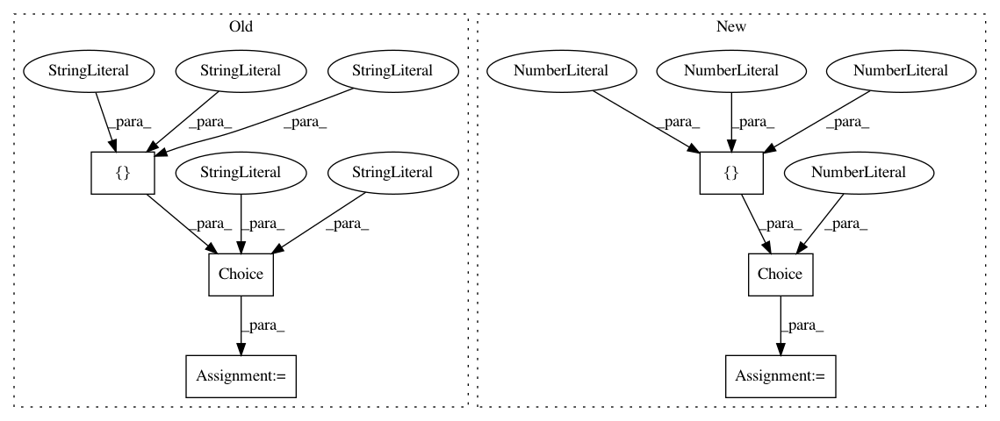

b1bfd16945a658d02847209e46a2ba8d72b456e1,autokeras/hypermodel/hyper_block.py,DenseBlock,build,#DenseBlock#Any#Any#,40
Before Change
input_node = layer_utils.format_inputs(inputs, self.name, num=1)[0]
output_node = input_node
output_node = Flatten().build(hp, output_node)
active_category = hp.Choice(
"activate_category",
["softmax", "relu", "tanh", "sigmoid"],
default="relu")
layer_stack = hp.Choice(
"layer_stack",
["dense-bn-act", "dense-act", "act-bn-dense"],
default="act-bn-dense")
After Change
default="dense-bn-act")
dropout_rate = hp.Choice("dropout_rate", [0, 0.25, 0.5], default=0.5)
for i in range(hp.Choice("num_layers", [1, 2, 3], default=2)):
units = hp.Choice(
"units_{i}".format(i=i),
[16, 32, 64, 128, 256, 512, 1024],
default=32)
if layer_stack == "dense-bn-act":
output_node = tf.keras.layers.Dense(units)(output_node)
output_node = tf.keras.layers.BatchNormalization()(output_node)
output_node = tf.keras.layers.ReLU()(output_node)
In pattern: SUPERPATTERN
Frequency: 4
Non-data size: 6
Instances
Project Name: jhfjhfj1/autokeras
Commit Name: b1bfd16945a658d02847209e46a2ba8d72b456e1
Time: 2019-07-01
Author: jhfjhfj1@gmail.com
File Name: autokeras/hypermodel/hyper_block.py
Class Name: DenseBlock
Method Name: build
Project Name: jhfjhfj1/autokeras
Commit Name: b1bfd16945a658d02847209e46a2ba8d72b456e1
Time: 2019-07-01
Author: jhfjhfj1@gmail.com
File Name: autokeras/hypermodel/hyper_block.py
Class Name: ImageBlock
Method Name: build